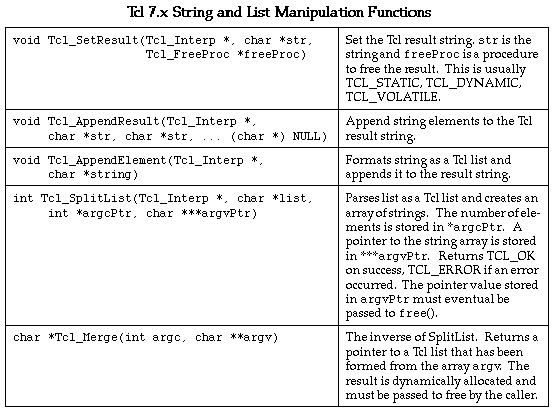
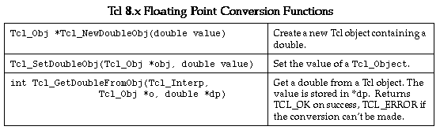
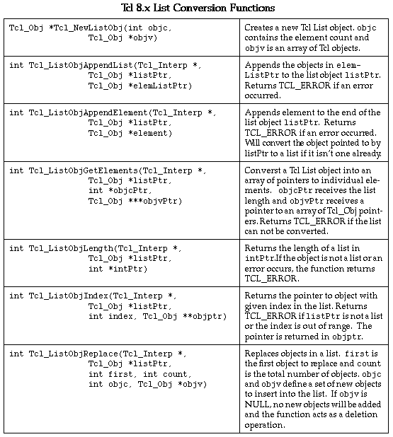
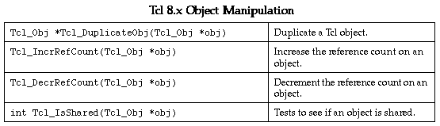

This will produce 2 files. The first file, example_wrap.c, contains all of the C code needed to build your Tcl module. The second file contains supporting documentation and may be named example_wrap.doc, example_wrap.html, example_wrap.tex, etc... To build a Tcl extension you will need to compile the example_wrap.c file and link it with the rest of your program (and possibly Tcl itself).swig -tcl example.i
-tcl8 Produce Tcl8.0 native wrappers (use in place of -tcl).
-module Set the module name.
-namespace Use [incr Tcl] namespaces.
-prefix pkg Set a package prefix of `pkg'. This prefix will be
attached to each function.
-htcl tcl.h Set name of Tcl header file.
-htk tk.h Set name of Tk header file.
-plugin Generate additional code for the netscape plugin.
-noobject Omit object oriented extensions (compatibility with SWIG 1.0)
Many of these options will be described later.
When locating the right header and libraries files, double check to make sure the files are the correct version and form a matching pair. SWIG works with the following Tcl/Tk releases.
Tcl 7.3, Tk 3.6 Tcl 7.4, Tk 4.0 Tcl 7.5, Tk 4.1 Tcl 7.6, Tk 4.2 Tcl 8.0a2, Tk 8.0a2
Do not mix versions. Although the code might compile if you do, it will usually core dump mysteriously. By default, SWIG looks for the header files "tcl.h" and "tk.h", but your installed version of Tcl/Tk may use slightly different names such as "tcl7.5.h" and "tk4.1.h". If you need to use different header files, you can use the -htcl and -htk options as in :
If you are installing Tcl/Tk yourself, it is often easier to set up a symbolic links between tcl.h and the header files for the latest installed version. You might also be able to make symbolic links to the correct files in your working directory.swig -tcl -htcl tcl7.5.h -htk tk4.1.h example.i
Unfortunately, the process of building of building shared libraries varies on every single machine. SWIG will try to guess when you run configure, but it isn't always successful. It's always a good idea to read the man pages on the compiler/linker to find out more information.unix > swig -tcl example.i unix > gcc -fpic example_wrap.c example.c -I/usr/local/include unix > gcc -shared example.o example_wrap.o -o example.so # Linux
The first argument is the name of the shared library while the second argument is the name of the module (the same as what you specified with the %module directive). As alternative, you can turn your module into a Tcl package. See the section on configuration management at the end of this chapter for details.load ./example.so example
%module mymodule ... declarations ... %include tclsh.i // Support code for rebuilding tclsh
To rebuild tclsh, you will need to compile as follows :
Alternatively, you can use SWIG's -l option to add the tclsh.i library file without modifying the interface file. For example :unix > swig -tcl example.i unix > gcc example_wrap.c example.c -I/usr/local/include -L/usr/local/lib -ltcl -ldl \ -lm -o my_tclsh
The -ldl option will be required if your Tcl/Tk supports dynamic loading. On some machines (most notably Solaris),it will also be necessary to add -lsocket -lnsl to the compile line. This will produce a new version of tclsh that is identical to the old one, but with your extensions added.unix > swig -tcl -ltclsh.i example.i unix > gcc example_wrap.c example.c -I/usr/local/include -L/usr/local/lib -ltcl -ldl \ -lm -o my_tclsh
If you are using Tk, you will want to rebuild the wish executable instead. This can be done as follows :
The compilation process is similar as before, but now looks like this :%module mymodule ... declarations ... %include wish.i // Support code for rebuilding wish
In this case you will end up with a new version of the wish executable with your extensions added. Make sure you include -ltk, -ltcl, and -lX11 in the order shown.unix > swig -tcl example.i unix > gcc example_wrap.c example.c -I/usr/local/include -L/usr/local/lib -ltk -ltcl \ -lX11 -ldl -lm -o my_wish
If you have a function "bar" in the SWIG file, the prefix option will append the prefix to the name when creating a command and call it "Foo_bar".swig -tcl -prefix Foo example.i
By default, the name of the namespace will be the same as the module name, but you can override it using the -prefix option.swig -tcl -namespace example.i
When the -namespace option is used, the resulting wrapper code can be compiled under both Tcl and [incr Tcl]. When compiling under Tcl, the namespace will turn into a package prefix such as in Foo_bar. When running under [incr Tcl], it will be something like Foo::bar.
Now, assuming all went well, SWIG will be automatically invoked when you build your project. Any changes made to the interface file will result in SWIG being automatically invoked to produce a new version of the wrapper file. To run your new Tcl extension, simply run tclsh or wish and use the load command. For example :
MSDOS > tclsh80 % load example.dll % fact 4 24 %
To build the extension, run NMAKE (you may need to run vcvars32 first). This is a pretty minimal Makefile, but hopefully its enough to get you started. With a little practice, you'll be making lots of Tcl extensions.# Makefile for building various SWIG generated extensions SRCS = example.c IFILE = example INTERFACE = $(IFILE).i WRAPFILE = $(IFILE)_wrap.c # Location of the Visual C++ tools (32 bit assumed) TOOLS = c:\msdev TARGET = example.dll CC = $(TOOLS)\bin\cl.exe LINK = $(TOOLS)\bin\link.exe INCLUDE32 = -I$(TOOLS)\include MACHINE = IX86 # C Library needed to build a DLL DLLIBC = msvcrt.lib oldnames.lib # Windows libraries that are apparently needed WINLIB = kernel32.lib advapi32.lib user32.lib gdi32.lib comdlg32.lib winspool.lib # Libraries common to all DLLs LIBS = $(DLLIBC) $(WINLIB) # Linker options LOPT = -debug:full -debugtype:cv /NODEFAULTLIB /RELEASE /NOLOGO / MACHINE:$(MACHINE) -entry:_DllMainCRTStartup@12 -dll # C compiler flags CFLAGS = /Z7 /Od /c /nologo TCL_INCLUDES = -Id:\tcl8.0a2\generic -Id:\tcl8.0a2\win TCLLIB = d:\tcl8.0a2\win\tcl80.lib tcl:: ..\..\swig -tcl -o $(WRAPFILE) $(INTERFACE) $(CC) $(CFLAGS) $(TCL_INCLUDES) $(SRCS) $(WRAPFILE) set LIB=$(TOOLS)\lib $(LINK) $(LOPT) -out:example.dll $(LIBS) $(TCLLIB) example.obj example_wrap.obj
Will be used in Tcl like this :%module example int foo(int a); double bar (double, double b = 3.0); ...
There isn't much more to say...this is pretty straightforward.set a [foo 2] set b [bar 3.5 -1.5] set b [bar 3.5] # Note : default argument is used
When used in an interface file and script, it will operate as follows :int, unsigned int, double, char *,
For all other C datatypes, SWIG will generate a pair of set/get functions. For example :// example.i %module example ... double My_variable; ... # Tcl script puts $My_variable # Output value of C global variable set My_variable 5.5 # Change the value
// example.i short My_short;
will be accessed in Tcl as follows :
While not the most elegant solution, this is the only solution for now. Tcl's normal variable linking mechanism operates directly on a variables and would not work correctly on datatypes other than the 3 basic datatypes supported by Tcl (int, double, and char *).puts [My_short_get] # Get value of global variable My_short_set 5.5 # Set value of global variable
A NULL pointer is represented by the string "NULL". NULL pointers can also be explicitly created as follows :_100f8e2_Vector_p
In Tcl 8.0, pointers are represented using a new type of Tcl object, but the string representation is the same (and is interchangable). As a general, direct manipulation of pointer values is discouraged._0_Vector_p
struct Vector {
double x,y,z;
};
These functions are then used in the resulting Tcl interface. For example :double Vector_x_get(Vector *obj) double Vector_x_set(Vector *obj, double x) double Vector_y_get(Vector *obj) double Vector_y_set(Vector *obj, double y) double Vector_z_get(Vector *obj) double Vector_z_set(Vector *obj, double z)
# v is a Vector that got created somehow % Vector_x_get $v 3.5 % Vector_x_set $v 7.8 # Change x component
Similar access is provided for unions and the data members of C++ classes.
class List {
public:
List();
~List();
int search(char *item);
void insert(char *item);
void remove(char *item);
char *get(int n);
int length;
static void print(List *l);
};
When wrapped by SWIG, the following functions are created :
Within Tcl, we can use the functions as follows :List *new_List(); void delete_List(List *l); int List_search(List *l, char *item); void List_insert(List *l, char *item); void List_remove(List *l, char *item); char *List_get(List *l, int n); int List_length_get(List *l); int List_length_set(List *l, int n); void List_print(List *l);
C++ objects are really just pointers (which are represented as strings). Member functions and data are accessed by simply passing a pointer into a collection of accessor functions that take the pointer as the first argument.% set l [new_List] % List_insert $l Ale % List_insert $l Stout % List_insert $l Lager % List_print $l Lager Stout Ale % puts [List_length_get $l] 3 % puts $l _1008560_List_p %
While somewhat primitive, the low-level SWIG interface provides direct and flexible access to almost any C++ object. As it turns out, it is possible to do some rather amazing things with this interface as will be shown in some of the later examples. SWIG 1.1 also generates an object oriented interface that can be used in addition to the basic interface just described here.
class List {
public:
List();
~List();
int search(char *item);
void insert(char *item);
void remove(char *item);
char *get(int n);
int length;
static void print(List *l);
};
MyObject o # Creates a new object `o'
MyObject o -this $objptr # Turn a pointer to an existing C++ object into a
# Tcl object `o'
MyObject -this $objptr # Turn the pointer $objptr into a Tcl "object"
MyObject -args args # Create a new object and pick a name for it. A handle
# will be returned and is the same as the pointer value.
MyObject # The same as MyObject -args, but for constructors that
# take no arguments.
Thus, for our List class, we can create new List objects as follows :
List l # Create a new list l set listptr [new_List] # Create a new List using low level interface List l2 -this $listptr # Turn it into a List object named `l2' set l3 [List] # Create a new list. The name of the list is in $l3 List -this $listptr # Turn $listptr into a Tcl object of the same name
Now assuming you're not completely confused at this point, the best way to think of this is that there are really two different ways of representing an object. One approach is to simply use the pointer value as the name of an object. For example :
The second approach is to allow you to pick a name for an object such as "foo". The different types of constructors are really just mechanism for using either approach._100e8f8_List_p
Or if you let SWIG generate the name of the object... (this is the pointer model)% List l % l insert "Bob" % l insert "Mary" % l search "Dave" 0 % ...
% set l [List] % $l insert "Bob" # Note $l contains the name of the object % $l insert "Mary" % $l search "Dave" 0 %
SWIG will automatically call the corresponding C/C++ destructor, with one caveat--SWIG will not destroy an object if you created it from an already existing pointer (if you called the constructor using the -this option). Since the pointer already existed when you created the Tcl object, Tcl doesn't own the object so it would probably be a bad idea to destroy it.% rename l "" # Destroy list object `l'
The cget method currently only allows retrieval of one member at a time. Extracting multiple members will require repeated calls.% l cget -length # Get the length of the list 13
The member -this contains the pointer to the object that is compatible with other SWIG functions. Thus, the following call would be legal
% List l # Create a new list object % l insert Mike % List_print [l cget -this] # Print it out using low-level function
% l configure -length 10 # Change length to 10 (probably not a good idea, but
# possible).
struct Vector {
double x, y, z;
};
% v configure -x 3.5 -y 2 -z -1.0
The order of attributes does not matter.
Here is a script that illustrates how these things work :
# Example 1 : Using a named object List l # Create a new list l insert Dave # Call some methods l insert Jane l insert Pat List_print [l cget -this] # Call a static method (which requires the pointer value) # Example 2: Let SWIG pick a name set l [List] # Create a new list $l insert Dave # Call some methods $l insert Jane $l insert Pat List_print $l # Call static method (name of object is same as pointer) # Example 3: Already existing object set l [new_List] # Create a raw object using low-level interface List_insert $l Dave # Call some methods (using low-level functions) List -this $l # Turn it into a Tcl object instead $l insert Jane $l insert Part List_print $l # Call static method (uses pointer value as before).
To disable the object oriented interface, run SWIG with the -noobject option. This will strip out all of the extra code and produce only the low-level interface.
/* tree.h */
typedef struct Node Node;
struct Node {
char *key;
char *value;
Node *left;
Node *right;
};
typedef struct Tree {
Node *head; /* Starting node */
Node *z; /* Ending node (at leaves) */
} Tree;
extern Node *new_Node(char *key, char *value);
extern Tree *new_Tree();
The C functions to create new nodes and trees are as follows :
/* File : tree.c */
#include <string.h>
#include "tree.h"
Node *new_Node(char *key, char *value) {
Node *n;
n = (Node *) malloc(sizeof(Node));
n->key = (char *) malloc(strlen(key)+1);
n->value = (char *) malloc(strlen(value)+1);
strcpy(n->key,key);
strcpy(n->value,value);
n->left = 0;
n->right = 0;
return n;
};
Tree *new_Tree() {
Tree *t;
t = (Tree *) malloc(sizeof(Tree));
t->head = new_Node("","__head__");
t->z = new_Node("__end__","__end__");
t->head->right = t->z;
t->z->left = t->z;
t->z->right = t->z;
return t;
}
// file : tree.i
%module tree
%{
#include "tree.h"
%}
%include tree.h // Just grab header file since it's fairly simple
% swig -tcl -ltclsh.i tree.i % gcc tree.c tree_wrap.c -I/usr/local/include -L/usr/local/lib -ltcl -lm -o my_tclsh
We can now try out the module interactively by just running the new `my_tclsh' executable.
unix > my_tclsh % set t [new_Tree] # Create a new tree _8053198_Tree_p % set n [Tree_head_get $t] # Get first node _80531a8_Node_p % puts [Node_value_get $n] # Get its value __head__ % Node -this $n % $n cget -value # Altenative method for getting value __head__
# Insert an item into a tree
proc insert_tree {tree key value} {
set tree_head [Tree_head_get $tree]
set tree_z [Tree_z_get $tree]
set p $tree_head
set x [Node_right_get $tree_head]
while {[Node_key_get $x] != "__end__"} {
set p $x
if {$key < [Node_key_get $x]} {
set x [Node_left_get $x]
} {
set x [Node_right_get $x]
}
}
set x [new_Node $key $value]
if {$key < [Node_key_get $p]} {
Node_left_set $p $x
} {
Node_right_set $p $x
}
Node_left_set $x $tree_z
Node_right_set $x $tree_z
}
# Search tree and return all matches
proc search_tree {tree key} {
set tree_head [Tree_head_get $tree]
set tree_z [Tree_z_get $tree]
set found {}
set x [Node_right_get $tree_head]
while {[Node_key_get $x] != "__end__"} {
if {[Node_key_get $x] == $key} {
lappend found [Node_value_get $x]
}
if {$key < [Node_key_get $x]} {
set x [Node_left_get $x]
} {
set x [Node_right_get $x]
}
}
return $found
}
# Insert all of the files in pathname into a binary tree
proc build_dir_tree {tree pathname} {
set error [catch {set filelist [glob -nocomplain $pathname/*]}]
if {$error == 0} {
foreach f $filelist {
if {[file isdirectory $f] == 1} {
insert_tree $tree [file tail $f] $f
if {[file type $f] != "link"} {build_dir_tree $tree $f}
} {
insert_tree $tree [file tail $f] $f
}
}
}
}
% source tree.tcl % set t [new_Tree] # Create a new tree _80533c8_Tree_p % build_dir_tree $t /home/beazley/SWIG/SWIG1.1 % search_tree $t tcl /home/beazley/SWIG/SWIG1.1/Examples/tcl /home/beazley/SWIG/SWIG1.1/swig_lib/tcl %
void insert_tree(Tree *t, char *key, char *value) {
Node *p;
Node *x;
p = t->head;
x = t->head->right;
while (x != t->z) {
p = x;
if (strcmp(key,x->key) < 0)
x = x->left;
else
x = x->right;
}
x = new_Node(key,value);
if (strcmp(key,p->key) < 0)
p->left = x;
else
p->right = x;
x->left = t->z;
x->right = t->z;
}
When reimplemented in C, the underlying Tcl script may not notice the difference. For example, our directory subroutine would not care if insert_tree had been written in Tcl or C. Of course, by writing this function C, we will get significantly better performance.
%module tree
%{
#include "tree.h"
%}
%include tree.h
%{
/* Function to count up Nodes */
static int count_nodes(Node *n, Node *end) {
if (n == end) return 0;
return 1+count_nodes(n->left,end)+count_nodes(n->right,end);
}
%}
// Attach some new methods to the Tree structure
%addmethods Tree {
void insert(char *key, char *value) {
insert_tree(self,key,value);
}
char *search(char *key) {
return search_tree(self,key);
}
char *findnext(char *key) {
return find_next(self,key);
}
int count() {
return count_nodes(self->head->right,self->z);
}
Tree(); // This is just another name for new_Tree
}
proc build_dir_tree {tree pathname} {
set error [catch {set filelist [glob -nocomplain $pathname/*]}]
if {$error == 0} {
foreach f $filelist {
if {[file isdirectory $f] == 1} {
$tree insert [file tail $f] $f # Note new calling method
if {[file type $f] != "link"} {build_dir_tree $tree $f}
} {
$tree insert [file tail $f] $f
}
}
}
}
% source tree.tcl % Tree t # Create a new Tree object _8054610_Tree_p % build_dir_tree t /home/beazley/SWIG/SWIG1.1 % t count 1770 % t search glaux.i /home/beazley/SWIG/SWIG1.1/Examples/OpenGL/glaux.i % t search typemaps /home/beazley/SWIG/SWIG1.1/Examples/perl5/typemaps % t findnext typemaps /home/beazley/SWIG/SWIG1.1/Examples/python/typemaps % t findnext typemaps /home/beazley/SWIG/SWIG1.1/Examples/tcl/typemaps % t findnext typemaps None %
With a little extra work, we've managed to turn an ordinary C structure into a class-like object in Tcl.
Suppose that we have a C program for manipulating directed graphs and that we wanted to provide a Tk interface for building graphs using a ball-and-stick model such as the following :
The SWIG interface file for this might look something like this :
%module graph
%{
#include "graph.h"
%}
/* Get a node's number */
int GetNum(Node *n); /* Get a node's number */
AdjList *GetAdj(Node *n); /* Get a node's adjacency list */
AdjList *GetNext(AdjList *l); /* Get next node in adj. list */
Node *GetNode(AdjList *l); /* Get node from adj. list */
Node *new_node(); /* Make a new node */
void AddLink(Node *v1, Node *v2); /* Add an edge */
... etc ...
# Make a new node and put it on the canvas
proc mkNode {x y} {
global nodeX nodeY nodeP nodeMap nodeList edgeFirst edgeSecond
set new [.c create oval [expr $x-15] [expr $y-15] \
[expr $x+15] [expr $y+15] -outline black \
-fill white -tags node]
set newnode [new_node] ;# Make a new C Node
set nnum [GetNum $newnode] ;# Get our node's number
set id [.c create text [expr $x-4] [expr $y+10] \
-text $nnum -anchor sw -tags nodeid]
set nodeX($new) $x ;# Save coords of canvas item
set nodeY($new) $y
set nodeP($new) $newnode ;# Save C pointer
set nodeMap($newnode) $new ;# Map pointer to Tk widget
set edgeFirst($new) {}
set edgeSecond($new) {}
lappend nodeList $new ;# Keep a list of all C
;# Pointers we've made
}
# Make a new edge between two nodes and put an arrow on the canvas
proc mkEdge {first second new} {
global nodeP edgeFirst edgeSecond
set edge [mkArrow $first $second] ;# Make an arrow
lappend edgeFirst($first) $edge ;# Save information
lappend edgeSecond($second) $edge
if {$new == 1} {
# Now add an edge within our C data structure
AddLink $nodeP($first) $nodeP($second) ;# Add link to C structure
}
}
In these functions, the array nodeP() allows us to associate a particular canvas item with a C object. When manipulating the graph, this makes it easy to move from the Tcl world to C. A second array, nodeMap() allows us to go the other way--mapping C pointers to canvas items. A list nodeList keeps track of all of the nodes we've created just in case we want to examine all of the nodes. For example, suppose a C function added more edges to the graph. To reflect the new state of the graph, we would want to add more edges to the Tk canvas. This might be accomplished as follows :
# Look at the C data structure and update the canvas
proc mkEdges {} {
global nodeX nodeY nodeP nodeMap nodeList edgeFirst edgeSecond
unset edgeFirst
unset edgeSecond
.c delete arc # Edges have been tagged with arc (not shown)
foreach node $nodeList { ;# clear old lists
set edgeFirst($node) {}
set edgeSecond($node) {}
}
foreach node $nodeList { ;# Go through all of the nodes
set v $nodeP($node) ;# Get the node pointer
set v1 [GetAdj $v] ;# Get its adjacency list
while {$v1 != "NULL"} {
set v2 [GetNode $v1] ;# Get node pointer
set w $nodeMap($v2) ;# Get canvas item
mkEdge $node $w 0 ;# Make an edge between them
set v1 [GetNext $v1] ;# Get next node
}
}
}
This function merely scans through all of the nodes and walks down the adjacency list of each one. The nodeMap() array maps C pointers onto the corresponding canvas items. We use this to construct edges on the canvas using the mkEdge function.
SWIG is quite literal in its interpretation of double *--it is a pointer to a double. To provide access, a few helper functions can be written such as the following :// Add vector a+b -> c void vector_add(double *a, double *b, double *c, int size);
// SWIG helper functions for double arrays
%inline %{
double *new_double(int size) {
return (double *) malloc(size*sizeof(double));
}
void delete_double(double *a) {
free a;
}
double get_double(double *a, int index) {
return a[index];
}
void set_double(double *a, int index, double val) {
a[index] = val;
}
%}
Using our C functions might work like this :
# Tcl code to create some arrays and add them
set a [new_double 200]
set b [new_double 200]
set c [new_double 200]
# Fill a and b with some values
for {set i 0} {$i < 200} {incr i 1} {
set_double $a $i 0.0
set_double $b $i $i
}
# Add them and store result in c
vector_add $a $b $c 200
# Tcl Procedure to turn a list into a C array
proc Tcl2Array {l} {
set len [llength $l]
set a [new_double $len]
set i 0
foreach item $l {
set_double $a $i $item
incr i 1
}
return $a
}
# Tcl Procedure to turn a C array into a Tcl List
proc Array2Tcl {a size} {
set l {}
for {set i 0} {$i < size} {incr i 1} {
lappend $l [get_double $a $i]
}
return $l
}
// gl.i : SWIG file for OpenGL
%module gl
%{
#include <GL/gl.h>
%}
... Rest of edited gl.h file here ...
A critical part of this first step is making sure you have the proper set of typedefs in the gl.i file. The first part of the file should include definitions such as the following :
typedef unsigned int GLenum; typedef unsigned char GLboolean; typedef unsigned int GLbitfield; typedef signed char GLbyte; typedef short GLshort; typedef int GLint; typedef int GLsizei; typedef unsigned char GLubyte; typedef unsigned short GLushort; typedef unsigned int GLuint; typedef float GLfloat; typedef float GLclampf; typedef double GLdouble; typedef double GLclampd; typedef void GLvoid;
%module glu
%{
#include <GL/glu.h>
%}
... rest of edited glu.h file here ...
// File :glaux.i
%module glaux
%{
#include "glaux.h"
%}
... Rest of edited glaux.h file ...
// help.i : OpenGL helper functions
%inline %{
GLfloat *newfv4(GLfloat a,GLfloat b,GLfloat c,GLfloat d) {
GLfloat *f;
f = (GLfloat *) malloc(4*sizeof(GLfloat));
f[0] = a; f[1] = b; f[2] = c; f[3] = d;
return f;
}
void setfv4(GLfloat *fv, GLfloat a, GLfloat b, GLfloat c, GLfloat d) {
fv[0] = a; fv[1] = b; fv[2] = c; fv[3] = d;
}
%}
%name(delfv4) void free(void *);
To build the module, we can simply run SWIG as follows :// // opengl.i. SWIG Interface file for OpenGL %module opengl %include gl.i // The main GL functions %include glu.i // The GLU library %include glaux.i // The aux library %include help.i // Our helper functions
orunix > swig -tcl opengl.i # Build a dynamicly loaded extension
Compile the file opengl_wrap.c with your C compiler and link with Tcl, Tk, and OpenGL to create the final module.unix > swig -tcl -lwish.i opengl.i # Build a statically linked wish executable
load ./opengl.so
auxInitDisplayMode [expr {$AUX_SINGLE | $AUX_RGBA | $AUX_DEPTH}]
auxInitPosition 0 0 500 500
auxInitWindow "Lit-Sphere"
# set up material properties
set mat_specular [newfv4 1.0 1.0 1.0 1.0]
set mat_shininess [newfv4 50.0 0 0 0]
set light_position [newfv4 1.0 1.0 1.0 0.0]
glMaterialfv $GL_FRONT $GL_SPECULAR $mat_specular
glMaterialfv $GL_FRONT $GL_SHININESS $mat_shininess
glLightfv $GL_LIGHT0 $GL_POSITION $light_position
glEnable $GL_LIGHTING
glEnable $GL_LIGHT0
glDepthFunc $GL_LEQUAL
glEnable $GL_DEPTH_TEST
# Set up view
glClearColor 0 0 0 0
glColor3f 1.0 1.0 1.0
glMatrixMode $GL_PROJECTION
glLoadIdentity
glOrtho -1 1 -1 1 -1 1
glMatrixMode $GL_MODELVIEW
glLoadIdentity
# Draw it
glClear $GL_COLOR_BUFFER_BIT
glClear $GL_DEPTH_BUFFER_BIT
auxSolidSphere 0.5
# Clean up
delfv4 $mat_specular
delfv4 $mat_shininess
delfv4 $light_position
In our interpreted interface, it is possible to interactively change parameters and see the effects of various OpenGL functions. This a great way to figure out what various functions do and to try different things without having to recompile and run after each change.
proc clear_screan { } {
global GL_COLOR_BUFFER_BIT, GL_DEPTH_BUFFER_BIT
glClear $GL_COLOR_BUFFER_BIT
glClear $GL_DEPTH_BUFFER_BIT
}
glMaterialfv $GL_FRONT $GL_SPECULAR {1.0 1.0 1.0 1.0}
While these are only minor annoyances, it turns out that you can address both problems using SWIG typemaps (which are discussed shortly).
class RangeError {}; // Used for an exception
class DoubleArray {
private:
int n;
double *ptr;
public:
// Create a new array of fixed size
DoubleArray(int size) {
ptr = new double[size];
n = size;
}
// Destroy an array
~DoubleArray() {
delete ptr;
}
// Return the length of the array
int length() {
return n;
}
// Get an item from the array and perform bounds checking.
double getitem(int i) {
if ((i >= 0) && (i < n))
return ptr[i];
else
throw RangeError();
}
// Set an item in the array and perform bounds checking.
void setitem(int i, double val) {
if ((i >= 0) && (i < n))
ptr[i] = val;
else {
throw RangeError();
}
}
};
The functions associated with this class can throw a C++ range exception for an out-of-bounds array access. We can catch this in our Tcl extension by specifying the following in an interface file :
%except(tcl) {
try {
$function // Gets substituted by actual function call
}
catch (RangeError) {
interp->result = "Array index out-of-bounds";
return TCL_ERROR;
}
}
%except(tcl8) {
try {
$function // Gets substituted by actual function call
}
catch (RangeError) {
Tcl_SetStringObj(tcl_result,"Array index out-of-bounds");
return TCL_ERROR;
}
}
%module example
%typemap(tcl,in) int {
$target = (int) atoi($source);
printf("Received an integer : %d\n",$target);
}
...
extern int fact(int n);
Typemaps require a language name, method name, datatype, and conversion code. For Tcl, "tcl" should be used as the language name. For Tcl 8.0, "tcl8" should be used if you are using the native object interface. The "in" method in this example refers to an input argument of a function. The datatype `int' tells SWIG that we are remapping integers. The supplied code is used to convert from a Tcl string to the corresponding C datatype. Within the supporting C code, the variable $source contains the source data (a string in this case) and $target contains the destination of a conversion (a C local variable).
When the example is compiled into a Tcl module, it will operate as follows :
% fact 6 Received an integer : 6 720 %
A full discussion of typemaps can be found in the main SWIG users reference. We will primarily be concerned with Tcl typemaps here.
%typemap(tcl,in) Converts a string to input function arguments
%typemap(tcl,out) Converts return value of a C function to a string
%typemap(tcl,freearg) Cleans up a function argument (if necessary)
%typemap(tcl,argout) Output argument processing
%typemap(tcl,ret) Cleanup of function return values
%typemap(tcl,const) Creation of Tcl constants
%typemap(memberin) Setting of C++ member data
%typemap(memberout) Return of C++ member data
%typemap(tcl, check) Check value of function arguments.
$source Source value of a conversion
$target Target of conversion (where the result should be stored)
$type C datatype being remapped
$mangle Mangled version of data (used for pointer type-checking)
$value Value of a constant (const typemap only)
$arg Original function argument (usually a string)
%module foo
// This typemap will be applied to all char ** function arguments
%typemap(tcl,in) char ** { ... }
// This typemap is applied only to char ** arguments named `argv'
%typemap(tcl,in) char **argv { ... }
Due to the name-based nature of typemaps, it is important to note that typemaps are independent of typedef declarations. For example :
%typemap(tcl, in) double {
... get a double ...
}
void foo(double); // Uses the above typemap
typedef double Real;
void bar(Real); // Does not use the above typemap (double != Real)
%typemap(tcl,in) double {
... get a double ...
}
void foo(double);
typedef double Real; // Uses typemap
%apply double { Real }; // Applies all "double" typemaps to Real.
void bar(Real); // Now uses the same typemap.
%module argv
// This tells SWIG to treat char ** as a special case
%typemap(tcl,in) char ** {
int tempc;
if (Tcl_SplitList(interp,$source,&tempc,&$target) == TCL_ERROR)
return TCL_ERROR;
}
// This gives SWIG some cleanup code that will get called after the function call
%typemap(tcl,freearg) char ** {
free((char *) $source);
}
// Return a char ** as a Tcl list
%typemap(tcl,out) char ** {
int i = 0;
while ($source[i]) {
Tcl_AppendElement(interp,$source[i]);
i++;
}
}
// Now a few test functions
%inline %{
int print_args(char **argv) {
int i = 0;
while (argv[i]) {
printf("argv[%d] = %s\n", i,argv[i]);
i++;
}
return i;
}
// Returns a char ** list
char **get_args() {
static char *values[] = { "Dave", "Mike", "Susan", "John", "Michelle", 0};
return &values[0];
}
// A global variable
char *args[] = { "123", "54", "-2", "0", "NULL", 0 };
%}
%include tclsh.i
% print_args {John Guido Larry}
argv[0] = John
argv[1] = Guido
argv[2] = Larry
3
% puts [get_args]
Dave Mike Susan John Michelle
% puts [args_get]
123 54 -2 0 NULL
%
Perhaps the only tricky part of this example is the implicit memory allocation that is performed by the Tcl_SplitList function. To prevent a memory leak, we can use the SWIG "freearg" typemap to clean up the argument value after the function call is made. In this case, we simply free up the memory that Tcl_SplitList allocated for us.
proc clearscreen { } {
global GL_COLOR_BUFFER_BIT
glClear $GL_COLOR_BUFFER_BIT
}
// Declare some Tcl hash table variables
%{
static Tcl_HashTable constTable; /* Hash table */
static int *swigconst; /* Temporary variable */
static Tcl_HashEntry *entryPtr; /* Hash entry */
static int dummy; /* dummy value */
%}
// Initialize the hash table (This goes in the initialization function)
%init %{
Tcl_InitHashTable(&constTable,TCL_STRING_KEYS);
%}
// A Typemap for creating constant values
// $source = the value of the constant
// $target = the name of the constant
%typemap(tcl,const) int, unsigned int, long, unsigned long {
entryPtr = Tcl_CreateHashEntry(&constTable,"$target",&dummy);
swigconst = (int *) malloc(sizeof(int));
*swigconst = $source;
Tcl_SetHashValue(entryPtr, swigconst);
/* Make it so constants can also be used as variables */
Tcl_LinkVar(interp,"$target", (char *) swigconst, TCL_LINK_INT | TCL_LINK_READ_ONLY);
};
// Now change integer handling to look for names in addition to values
%typemap(tcl,in) int, unsigned int, long, unsigned long {
Tcl_HashEntry *entryPtr;
entryPtr = Tcl_FindHashEntry(&constTable,$source);
if (entryPtr) {
$target = ($type) (*((int *) Tcl_GetHashValue(entryPtr)));
} else {
$target = ($type) atoi($source);
}
}
proc clearscreen { } {
glClear GL_COLOR_BUFFER_BIT
}
// A typemap defining how to return an argument by appending it to the result
%typemap(tcl,argout) double *outvalue {
char dtemp[TCL_DOUBLE_SPACE];
Tcl_PrintDouble(interp,*($source),dtemp);
Tcl_AppendElement(interp, dtemp);
}
// A typemap telling SWIG to ignore an argument for input
// However, we still need to pass a pointer to the C function
%typemap(tcl,ignore) double *outvalue {
static double temp; /* A temporary holding place */
$target = &temp;
}
// Now a function returning two values
int mypow(double a, double b, double *outvalue) {
if ((a < 0) || (b < 0)) return -1;
*outvalue = pow(a,b);
return 0;
};
% mypow 2 3 # Returns two values, a status value and the result 0 8 %
An alternative approach to this is to return values in a Tcl variable as follows :
%typemap(tcl,argout) double *outvalue {
char temp[TCL_DOUBLE_SPACE];
Tcl_PrintDouble(interp,*($source),dtemp);
Tcl_SetVar(interp,$arg,temp,0);
}
%typemap(tcl,in) double *outvalue {
static double temp;
$target = &temp;
}
Here, we have passed the name of a Tcl variable to our C wrapper function which then places the return value in that variable. This is now very close to the way in which a C function calling this function would work.% set status [mypow 2 3 a] % puts $status 0 % puts $a 8.0 %
typedef struct {
char login[16]; /* Login ID */
int uid; /* User ID */
int gid; /* Group ID */
char name[32]; /* User name */
char home[256]; /* Home directory */
} User;
will work, but they will be weird. In fact, they may not work at all unless you write helper functions to create users and extract data. A typemap can be used to fix this problem however. For example :extern void add_user(User u); extern User *lookup_user(char *name);
// This works for both "User" and "User *"
%typemap(tcl,in) User * {
int tempc;
char **tempa;
static User temp;
if (Tcl_SplitList(interp,$source,&tempc,&tempa) == TCL_ERROR) return TCL_ERROR;
if (tempc != 5) {
free((char *) tempa);
interp->result = "Not a valid User record";
return TCL_ERROR;
}
/* Split out the different fields */
strncpy(temp.login,tempa[0],16);
temp.uid = atoi(tempa[1]);
temp.gid = atoi(tempa[2]);
strncpy(temp.name,tempa[3],32);
strncpy(temp.home,tempa[4],256);
$target = &temp;
free((char *) tempa);
}
// Describe how we want to return a user record
%typemap(tcl,out) User * {
char temp[20];
if ($source) {
Tcl_AppendElement(interp,$source->login);
sprintf(temp,"%d",$source->uid);
Tcl_AppendElement(interp,temp);
sprintf(temp,"%d",$source->gid);
Tcl_AppendElement(interp,temp);
Tcl_AppendElement(interp,$source->name);
Tcl_AppendElement(interp,$source->home);
}
}
These function marshall Tcl lists to and from our User data structure. This allows a more natural implementation that we can use as follows :
% add_user {beazley 500 500 "Dave Beazley" "/home/beazley"}
% lookup_user beazley
beazley 500 500 {Dave Beazley} /home/beazley

These functions can be used in typemaps as well. For example, the following typemap makes an argument of "char *buffer" accept a pointer instead of a NULL-terminated ASCII string.
%typemap(tcl,in) char *buffer {
if (SWIG_GetPtr($source, (void **) &$target, "$mangle")) {
Tcl_SetResult(interp,"Type error. Not a pointer", TCL_STATIC);
return TCL_ERROR;
}
}
By now you hopefully have the idea that typemaps are a powerful mechanism for building more specialized applications. While writing typemaps can be technical, many have already been written for you. See the SWIG library reference for more information.
While SWIG is certainly not a magical solution to the configuration management problem, it can help out alot in a number of key areas :
/* main.c */
#include <tcl.h>
main(int argc, char *argv[]) {
Tcl_Main(argc,argv);
exit(0);
}
int Tcl_AppInit(Tcl_Interp *interp) {
if (Tcl_Init(interp) == TCL_ERROR) {
return TCL_ERROR;
}
/* Initialize your extension */
if (Your_Init(interp) == TCL_ERROR) {
return TCL_ERROR;
}
tcl_RcFileName = "~/.myapp.tcl";
return TCL_OK;
}
In SWIG, it is almost never necessary to write a Tcl_AppInit() function because this is now done by SWIG library files such as tclsh.i or wish.i. To give a better idea of what these files do, here's the code from the SWIG tclsh.i file which is roughly comparable to the above code
// tclsh.i : SWIG library file for rebuilding tclsh
%{
/* A TCL_AppInit() function that lets you build a new copy
* of tclsh.
*
* The macro SWIG_init contains the name of the initialization
* function in the wrapper file.
*/
#ifndef SWIG_RcFileName
char *SWIG_RcFileName = "~/.myapprc";
#endif
int Tcl_AppInit(Tcl_Interp *interp){
if (Tcl_Init(interp) == TCL_ERROR)
return TCL_ERROR;
/* Now initialize our functions */
if (SWIG_init(interp) == TCL_ERROR)
return TCL_ERROR;
#if TCL_MAJOR_VERSION > 7 || TCL_MAJOR_VERSION == 7 && TCL_MINOR_VERSION >= 5
Tcl_SetVar(interp,"tcl_rcFileName",SWIG_RcFileName,TCL_GLOBAL_ONLY);
#else
tcl_RcFileName = SWIG_RcFileName;
#endif
return TCL_OK;
}
#if TCL_MAJOR_VERSION > 7 || TCL_MAJOR_VERSION == 7 && TCL_MINOR_VERSION >= 4
int main(int argc, char **argv) {
Tcl_Main(argc, argv, Tcl_AppInit);
return(0);
}
#else
extern int main();
#endif
%}
This file is essentially the same as a normal Tcl_AppInit() function except that it supports a variety of Tcl versions. When included into an interface file, the symbol SWIG_init contains the actual name of the initialization function (This symbol is defined by SWIG when it creates the wrapper code). Similarly, a startup file can be defined by simply defining the symbol SWIG_RcFileName. Thus, a typical interface file might look like this :
%module graph
%{
#include "graph.h"
#define SWIG_RcFileName "graph.tcl"
%}
%include tclsh.i
... declarations ...
// expect.i : SWIG Library file for Expect
%{
/* main.c - main() and some logging routines for expect
Written by: Don Libes, NIST, 2/6/90
Design and implementation of this program was paid for by U.S. tax
dollars. Therefore it is public domain. However, the author and NIST
would appreciate credit if this program or parts of it are used.
*/
#include "expect_cf.h"
#include <stdio.h>
#include INCLUDE_TCL
#include "expect_tcl.h"
void
main(argc, argv)
int argc;
char *argv[];
{
int rc = 0;
Tcl_Interp *interp = Tcl_CreateInterp();
int SWIG_init(Tcl_Interp *);
if (Tcl_Init(interp) == TCL_ERROR) {
fprintf(stderr,"Tcl_Init failed: %s\n",interp->result);
exit(1);
}
if (Exp_Init(interp) == TCL_ERROR) {
fprintf(stderr,"Exp_Init failed: %s\n",interp->result);
exit(1);
}
/* SWIG initialization. --- 2/11/96 */
if (SWIG_init(interp) == TCL_ERROR) {
fprintf(stderr,"SWIG initialization failed: %s\n", interp->result);
exit(1);
}
exp_parse_argv(interp,argc,argv);
/* become interactive if requested or "nothing to do" */
if (exp_interactive)
(void) exp_interpreter(interp);
else if (exp_cmdfile)
rc = exp_interpret_cmdfile(interp,exp_cmdfile);
else if (exp_cmdfilename)
rc = exp_interpret_cmdfilename(interp,exp_cmdfilename);
/* assert(exp_cmdlinecmds != 0) */
exp_exit(interp,rc);
/*NOTREACHED*/
}
%}
In the event that you need to write a new library file such as this, the process usually isn't too difficult. Start by grabbing the original Tcl_AppInit() function for the package. Enclose it in a %{,%} block. Now add a line that makes a call to SWIG_init(). This will automatically resolve to the real initialization function when compiled.
// blt.i : SWIG library file for initializing the BLT extension
%{
#ifdef __cplusplus
extern "C" {
#endif
extern int Blt_Init(Tcl_Interp *);
#ifdef __cplusplus
}
#endif
%}
%init %{
if (Blt_Init(interp) == TCL_ERROR) {
return TCL_ERROR;
}
%}
// tix.i : SWIG library file for initializing the Tix extension
%{
#ifdef __cplusplus
extern "C" {
#endif
extern int Tix_Init(Tcl_Interp *);
#ifdef __cplusplus
}
#endif
%}
%init %{
if (Tix_Init(interp) == TCL_ERROR) {
return TCL_ERROR;
}
%}
To use our library files and build a new version of wish, we might now do the following :
Of course, the really cool part about all of this is that the file `mywish.i' can itself, serve as a library file. Thus, when building various versions of Tcl, we can place everything we want to use a special file and use it in all of our other interface files :// mywish.i : wish with a bunch of stuff added to it %include wish.i %include blt.i %include tix.i ... additional declarations ...
or we can grab it on the command line :// interface.i %module mymodule %include mywish.i // Build our version of Tcl with extensions ... C declarations ...
unix > swig -tcl -lmywish.i interface.i
%init %{
Tcl_PkgProvide(interp,"example","0.0");
%}
Where "example" is the name of the package and "0.0" is the version of the package.
Next, after building the SWIG generated module, you need to execute the "pkg_mkIndex" command inside tclsh. For example :
This creates a file "pkgIndex.tcl" with information about the package. To use yourunix > tclsh % pkg_mkIndex . example.so % exit
package, you now need to move it to its own subdirectory which has the same name as the package. For example :
./example/ pkgIndex.tcl # The file created by pkg_mkIndex example.so # The SWIG generated module
Finally, assuming that you're not entirely confused at this point, make sure that the example subdirectory is visible from the directories contained in either the tcl_library or auto_path variables. At this point you're ready to use the package as follows :
unix > tclsh % package require example % fact 4 24 %
If you're working with an example in the current directory and this doesn't work, do this instead :
unix > tclsh % lappend auto_path . % package require example % fact 4 24
As a final note, most SWIG examples do not yet use the package commands. For simple extensions it may be easier just to use the load command instead.
/* File : array.i */
%module array
%inline %{
double *new_double(int size) {
return (double *) malloc(size*sizeof(double));
}
void delete_double(double *a) {
free(a);
}
double get_double(double *a, int index) {
return a[index];
}
void set_double(double *a, int index, double val) {
a[index] = val;
}
int *new_int(int size) {
return (int *) malloc(size*sizeof(int));
}
void delete_int(int *a) {
free(a);
}
int get_int(int *a, int index) {
return a[index];
}
int set_int(int *a, int index, int val) {
a[index] = val;
}
%}
proc Array {type size} {
set ptr [new_$type $size]
set code {
set method [lindex $args 0]
set parms [concat $ptr [lrange $args 1 end]]
switch $method {
get {return [eval "get_$type $parms"]}
set {return [eval "set_$type $parms"]}
delete {eval "delete_$type $ptr; rename $ptr {}"}
}
}
# Create a procedure
uplevel "proc $ptr args {set ptr $ptr; set type $type;$code}"
return $ptr
}
Our script allows easy array access as follows :
set a [Array double 100] ;# Create a double [100]
for {set i 0} {$i < 100} {incr i 1} { ;# Clear the array
$a set $i 0.0
}
$a set 3 3.1455 ;# Set an individual element
set b [$a get 10] ;# Retrieve an element
set ia [Array int 50] ;# Create an int[50]
for {set i 0} {$i < 50} {incr i 1} { ;# Clear it
$ia set $i 0
}
$ia set 3 7 ;# Set an individual element
set ib [$ia get 10] ;# Get an individual element
$a delete ;# Destroy a
$ia delete ;# Destroy ia
The cool thing about this approach is that it makes a common interface for two different types of arrays. In fact, if we were to add more C datatypes to our wrapper file, the Tcl code would work with those as well--without modification. If an unsupported datatype was requested, the Tcl code would simply return with an error so there is very little danger of blowing something up (although it is easily accomplished with an out of bounds array access).
# swig_c++.tcl
# Provides a simple object oriented interface using
# SWIG's low level interface.
#
proc new {objectType handle_r args} {
# Creates a new SWIG object of the given type,
# returning a handle in the variable "handle_r".
#
# Also creates a procedure for the object and a trace on
# the handle variable that deletes the object when the
# handle varibale is overwritten or unset
upvar $handle_r handle
#
# Create the new object
#
eval set handle \[new_$objectType $args\]
#
# Set up the object procedure
#
proc $handle {cmd args} "eval ${objectType}_\$cmd $handle \$args"
#
# And the trace ...
#
uplevel trace variable $handle_r uw "{deleteObject $objectType $handle}"
#
# Return the handle so that 'new' can be used as an argument to a procedure
#
return $handle
}
proc deleteObject {objectType handle name element op} {
#
# Check that the object handle has a reasonable form
#
if {![regexp {_[0-9a-f]*_(.+)_p} $handle]} {
error "deleteObject: not a valid object handle: $handle"
}
#
# Remove the object procedure
#
catch {rename $handle {}}
#
# Delete the object
#
delete_$objectType $handle
}
proc delete {handle_r} {
#
# A synonym for unset that is more familiar to C++ programmers
#
uplevel unset $handle_r
}
To use this file, we simply source it and execute commands such as "new" and "delete" to manipulate objects. For example :
// list.i
%module List
%{
#include "list.h"
%}
// Very simple C++ example
class List {
public:
List(); // Create a new list
~List(); // Destroy a list
int search(char *value);
void insert(char *); // Insert a new item into the list
void remove(char *); // Remove item from list
char *get(int n); // Get the nth item in the list
int length; // The current length of the list
static void print(List *l); // Print out the contents of the list
};
Now a Tcl script using the interface...
The cool thing about this example is that it works with any C++ object wrapped by SWIG and requires no special compilation. Proof that a short, but clever Tcl script can be combined with SWIG to do many interesting things.load ./list.so list ; # Load the module source swig_c++.tcl ; # Source the object file new List l $l insert Dave $l insert John $l insert Guido $l remove Dave puts $l length_get delete l
To use the plugin, use the -plugin option :
This adds a "safe" initialization function compatible with the plugin (in reality, it just calls the function SWIG already creates). You also need to put the following symbol in your interface file for it to work :swig -tcl -plugin interface.i
%{
#define SAFE_SWIG
%}
unix > gcc -I/usr/local/include -c example.o interface_wrap.c
unix > ld -shared example.o interface_wrap.o \
-L/home/beazley/.netscape/plugins/libtclplugin.so -o example.so
With luck, you will now be ready to run (at least that's the theory).load $tcl_library/example.so example
The Tcl 8.0 module uses the new Tcl 8.0 object interface whenever possible. Instead of using strings, the object interface provides more direct access to objects in their native representation. As a result, the performance is significantly better. The older Tcl SWIG module is also compatible with Tcl 8.0, but since it uses strings it will be much slower than the new version.
In addition to using native Tcl objects, the Tcl8.0 manipulates pointers directly in in a special Tcl object. On the surface it still looks like a string, but internally its represented a (value,type) pair. This too, should offer somewhat better performance.